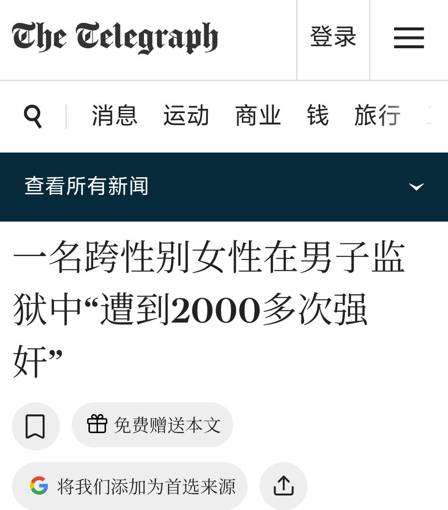

孙悟元
@wuyuandev
RT @zza2ku: 2016年，澳州跨性别女性“玛丽（化名）”透露，她在90年代因偷车在男子监狱服刑四年期间遭到强奸超过2000次
她被关押在澳大利亚男子监狱后，每天都遭到殴打
https://t.co/YOqdYqBJxm

拆腻丝🏳️⚧️
@zza2ku
2016年，澳州跨性别女性“玛丽（化名）”透露，她在90年代因偷车在男子监狱服刑四年期间遭到强奸超过2000次
她被关押在澳大利亚男子监狱后，每天都遭到殴打
https://t.co/YOqdYqBJxm https://t.co/Nc43ZIeksF